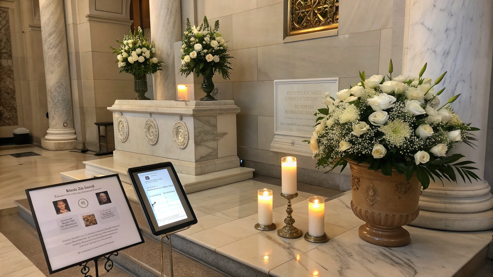

I 3 Errori Cruciali nella Gestione dei Necrologi e Ricordini: Come Risolverli con Eternia

I 3 Errori Più Gravi nella Gestione di Necrologi e Ricordini per Onoranze Funebri e Case Funerarie
- I ricordini e necrologi cartacei si perdono facilmente e risultano costosi e limitati nelle possibilità espressive.
- La raccolta delle condoglianze è spesso disorganizzata e poco solenne, compromettendo l’esperienza di commemorazione.
- Eternia offre soluzioni digitali innovative per creare portali memoriali interattivi, necrologi AI e reperibilità vocale AI H24 con QR code dedicati.
Analisi Approfondita della Notizia e Implicazioni Operative
Il settore delle onoranze funebri e dei servizi memoriali sta affrontando una trasformazione imprescindibile, spinta dall’evoluzione tecnologica e dalle nuove esigenze dei clienti. I tradizionali ricordini e necrologi cartacei, seppur intrisi di valore emotivo, mostrano limiti evidenti: costi elevati per la stampa e la distribuzione, rischio concreto che i materiali vadano persi o danneggiati, nonché una scarsa possibilità di personalizzazione e aggiornamento in tempo reale. Questi problemi aumentano la complessità gestionale per le imprese, penalizzando la qualità del servizio offerto. Inoltre, la gestione manuale delle condoglianze spesso si traduce in una raccolta confusa e poco solenne, che non rende giustizia alla memoria delle persone care.
Le Conseguenze e i Costi di Non Agire
Ignorare questi aspetti comporta diversi svantaggi operativi e reputazionali. I ricordini cartacei si perdono facilmente, causando disagio tra i familiari e diminuendo il valore commemorativo. I necrologi cartacei, oltre al costo elevato, sono limitati nella fruizione: non permettono di raccogliere testimonianze, foto o messaggi successivi alla cerimonia, creando una frattura nel percorso memoriale. Infine, la difficoltà nel raccogliere condoglianze in modo solenne si traduce in un’esperienza utente meno sentita, con il rischio di far apparire il servizio antiquato o poco attento alle moderne esigenze digitali.
Dal punto di vista economico, mantenere un sistema tradizionale significa sostenere spese continue per stampa e distribuzione, senza contare il tempo perso dal personale per gestire la parte manuale. Questo sottrae risorse preziose che potrebbero essere impiegate per migliorare il servizio clienti e ampliare le offerte memoriali digitali e multicanale.
Come Eternia Risolve il Problema
Eternia si presenta come la soluzione tecnologica d’avanguardia che permette di rivoluzionare la gestione dei necrologi e dei ricordini, convertendo un processo frammentato e costoso in un’esperienza digitale completa, interattiva e personalizzabile. Il SaaS di RM Studio è progettato specificamente per titolari di onoranze funebri, case funerarie e servizi memoriali per animali domestici, offrendo le funzionalità più avanzate per soddisfare tutte le esigenze operative.
Tra le caratteristiche principali spiccano:
- Portali memoriali digitali d’autore: personalizzati con il brand dell’agenzia, accessibili via QR code applicati su urne e ricordini, permettono ai famigliari e amici di ricordare la persona cara in modo elegante e duraturo.
- Mappa GPS integrata: facilita l’orientamento verso le sedi cerimoniali o cimiteriali, migliorando l’esperienza degli utenti e ottimizzando la logistica degli eventi.
- Libro dei Ricordi interattivo: consente a chi partecipa di lasciare messaggi, foto e condoglianze in modo organizzato e solenne, creando una memoria digitale condivisa e facilmente accessibile.
- Necrologi AI in 1-click: Eternia genera automaticamente necrologi eleganti, personalizzati e aggiornabili, rendendo immediato e senza errori questo delicato passaggio.
- Reperibilità vocale AI H24: un assistente vocale smart disponibile 24 ore su 24 per fornire informazioni, rispondere ai quesiti e guidare gli utenti senza necessità di intervento umano immediato.
| Gestione Tradizionale | Con Eternia |
|---|---|
| Ricordini cartacei facilmente smarriti | Portali digitali via QR code sempre accessibili |
| Necrologi costosi e statici | Necrologi AI aggiornabili, eleganti e personalizzati |
| Raccolta condoglianze disorganizzata e poco solenne | Libro dei Ricordi interattivo e solenne |
| Supporto telefonico limitato e manuale | Reperibilità vocale AI 24/7 con risposte immediate |
💡 Ti è stato utile questo approfondimento?
Condividilo con un collega o un amico del settore Titolari di Onoranze Funebri, Case Funerarie e Servizi Memoriali Pet a cui potrebbe interessare!
FAQ - Domande Frequenti per Professionisti del Settore
1. Come posso integrare Eternia con i processi esistenti della mia agenzia funebre?
Eternia è progettato per una facile integrazione nativa con le attività esistenti, offrendo strumenti White-Label personalizzati che mantengono il brand dell’agenzia senza richiedere cambiamenti strutturali importanti.
2. Quanto è sicuro conservare i dati delle famiglie e dei ricordi digitali su Eternia?
Eternia garantisce elevati standard di sicurezza e privacy con crittografia avanzata e hosting certificato, assicurando la tutela dei dati sensibili e la conformità GDPR.
3. L’assistente vocale AI può gestire richieste specifiche o necessita di supervisione umana?
Il sistema AI è in grado di rispondere autonomamente a domande frequenti e fornire informazioni 24/7, mentre richieste più complesse possono essere indirizzate facilmente al personale umano per un supporto personalizzato.
Inizia Subito
Agency Hub B2B a €690 per 10 Cerimonie White-Label personalizzate col brand dell'agenzia.
Fonti Ufficiali e Risorse Esterne
Scopri l'Intelligenza Artificiale per la tua attività
Ottimizza i processi e aumenta le vendite con le soluzioni B2B di RM Studio.
Scopri Eternia